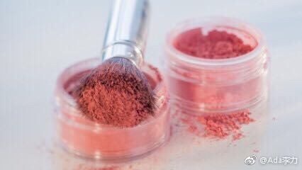
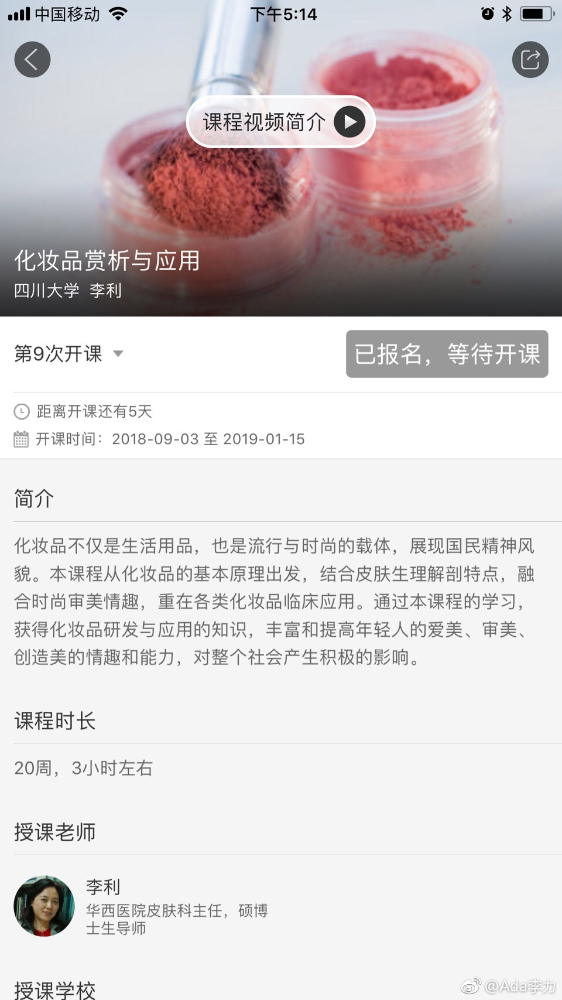

我在#中国大学MOOC# 学《化妆品赏析与应用》， 网页链接 @李利教授 授课
网页链接 @李利教授 授课
这次课2018年9月3日开课，每周一课，15节课，2019年1月15日结束。估计要在线参加讨论，考试什么的，因为最后有四川大学的结业证书。最重要的是：免费！！！
中国大学慕课App很不错，真正把大学课堂搬到了网上。得到上有些收费课程，慕课App上都免费，而且还有作业和考卷。
这次课2018年9月3日开课，每周一课，15节课，2019年1月15日结束。估计要在线参加讨论，考试什么的，因为最后有四川大学的结业证书。最重要的是：免费！！！
中国大学慕课App很不错，真正把大学课堂搬到了网上。得到上有些收费课程，慕课App上都免费，而且还有作业和考卷。
- 
- 